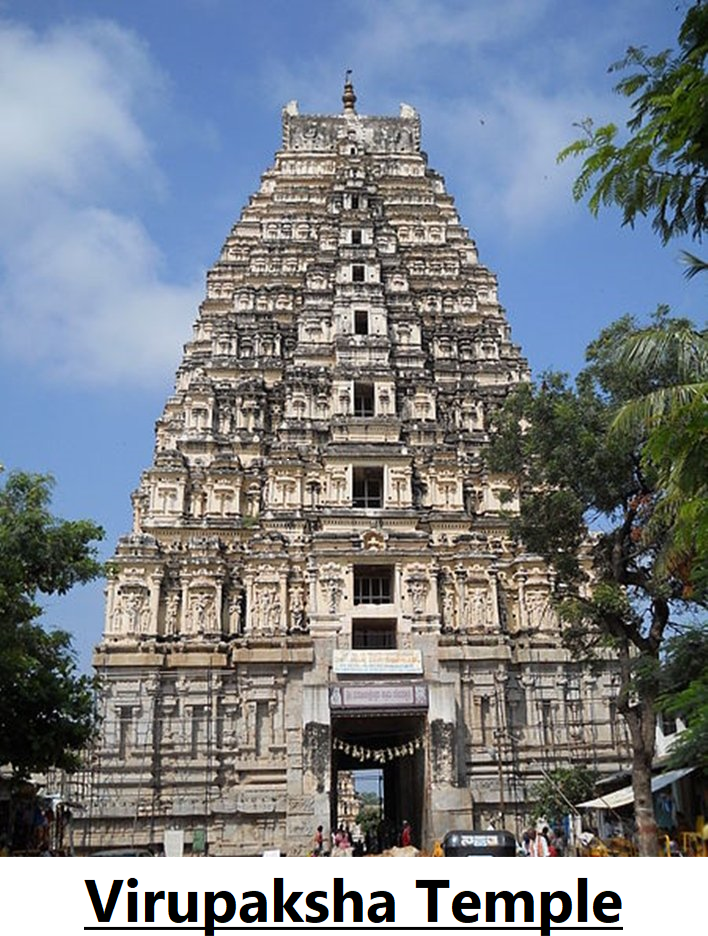
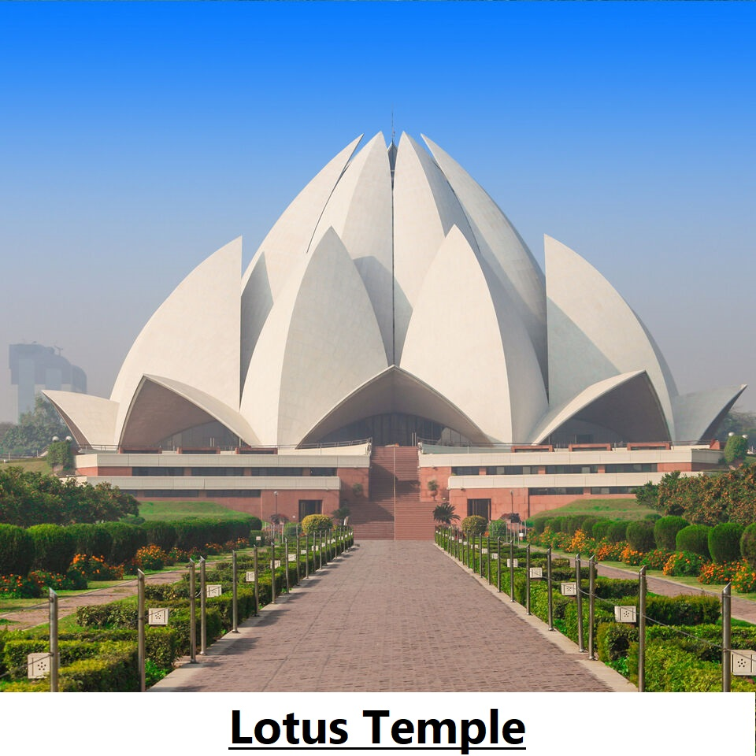
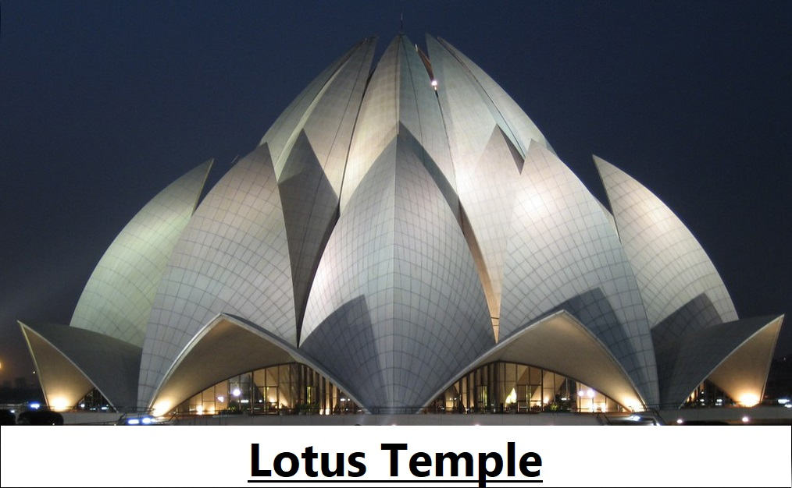

Virupaksha Temple: It is a temple dedicated to Lord Shiva. It started as a small shrine and grew into a
large complex under the Vijayanagara rulers. It remains an important center of pilgrimage in the site of
Hampi and is also popular for its yearly chariot festival.
Lotus Temple: The Lotus Temple is a Bahai (a religion) House of Worship. Like all other Bahai temples, it is also dedicated to the oneness of religions and humanity. Followers of all religions are welcome to gather here to pray, worship, and read their scriptures.
Lotus Temple: The Lotus Temple is a Bahai (a religion) House of Worship. Like all other Bahai temples, it is also dedicated to the oneness of religions and humanity. Followers of all religions are welcome to gather here to pray, worship, and read their scriptures.

A key feature of the Virupaksha Temple is that its gopuram gatehouses uses the mathematical concept of
fractals to make it look beautiful. A fractal is a never-ending pattern, for example - a snowflake.
Whereas the most beautiful feature of the Lotus Temple is that it is inspired by the Lotus flower and is composed of 27 free-standing "petals" arranged in clusters of three to form nine sides.
Both temples have a large courtyard.
Whereas the most beautiful feature of the Lotus Temple is that it is inspired by the Lotus flower and is composed of 27 free-standing "petals" arranged in clusters of three to form nine sides.
Both temples have a large courtyard.

In the Virupaksha Temple, the framework is of brick and includes a gravel base giving way to the court
outside.
In the Lotus Temple, the surface of the House of Worship is made of white marble from the Penteli mountain in Greece. The 27 petals were clad with marble from Rajasthani Macrana.
In the Lotus Temple, the surface of the House of Worship is made of white marble from the Penteli mountain in Greece. The 27 petals were clad with marble from Rajasthani Macrana.